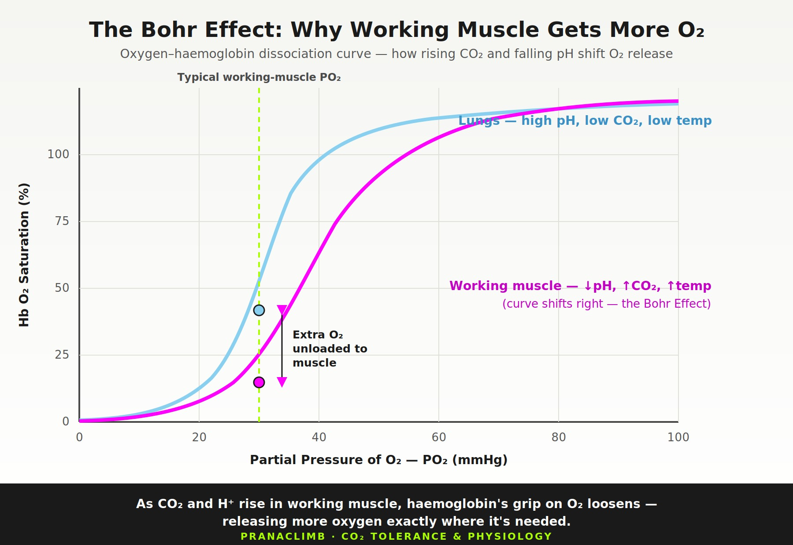

The Signal Behind the Urge to Breathe
At a crux, breathing may become rapid and irregular—or disappear briefly during a lock-off, dyno or high-tension position. During the brief breath holds typical of sea-level rock climbing, rising arterial CO₂—acting largely through the associated increase in hydrogen ions and fall in pH—is the more relevant chemical stimulus behind early air hunger. These holds are not normally long enough for arterial hypoxia to become an important ventilatory stimulus. Hypoxic drive becomes more relevant at altitude, where reduced inspired oxygen lowers arterial PO₂, or during unusually prolonged or repeated apnoea. Lung volume, involuntary respiratory-muscle activity, attention, emotion and expectation also influence the experience and the point at which a hold ends.
Central chemoreception primarily detects CO₂ through CO₂-driven changes in hydrogen-ion concentration within brain interstitial fluid. Peripheral chemoreceptors, particularly the carotid bodies, respond to arterial CO₂, arterial pH and sufficiently low arterial oxygen. During hard exercise, CO₂-related chemoreflex drive remains important, but ventilation is also influenced by central motor command, feedback from working muscles, temperature, emotion and acid–base disturbance (Guyenet & Bayliss, 2015; Forster et al., 2012; Parkes, 2006).
The Bohr Effect: CO₂ and Oxygen Unloading
Carbon dioxide is part of the normal system that links metabolism to oxygen transport. In active tissue, CO₂ enters the blood and is rapidly converted—under the action of carbonic anhydrase—into bicarbonate and hydrogen ions. The associated rise in CO₂ and fall in pH reduce haemoglobin’s affinity for oxygen, shifting the oxygen–haemoglobin dissociation curve to the right. This facilitates oxygen unloading where metabolic activity is high. In the lungs, lower CO₂ and a relatively higher pH favour oxygen loading onto haemoglobin (Jensen, 2004; Benner et al., 2026).
This is the Bohr effect. A 2026 laboratory study using whole blood from healthy volunteers confirmed that increasing PCO₂ shifted the dissociation curve rightward without changing its maximum haemoglobin oxygen saturation (Valsecchi et al., 2026). The effect changes haemoglobin’s affinity for oxygen; it does not create additional oxygen or independently determine how much reaches a working muscle.
A 2026 narrative review found that short-term, controlled hypercapnia can alter ventilation, circulation and metabolic stress, and that some experimental hypoventilation or added-dead-space protocols have influenced selected high-intensity outcomes. The protocols and results were heterogeneous, and long-term endurance benefits were not established (Danek, 2026). This is emerging training research rather than evidence that a particular breath-hold score measures the Bohr effect or predicts climbing performance.
Hypoxia, Breath Holding and Capillary Adaptation
Repeated breath holding and exercise in systemic hypoxia are related but distinct training stimuli. Exercise performed under reduced inspired oxygen has direct human evidence for skeletal-muscle vascular adaptation. A meta-analysis of controlled training studies found significantly greater skeletal-muscle capillarization following exercise in hypoxia than comparable exercise in normoxia (Montero & Lundby, 2016). In one eight-week resistance-training study, the group training at 14.4% oxygen increased its capillary-to-fibre ratio by 52% (Kon et al., 2014).
New muscle-biopsy research adds an important breath-hold connection. Elia et al. (2026) studied 10 competitive breath-hold divers and 10 non-divers matched for age, body size and whole-body VO₂max. The divers displayed significantly greater capillary density, capillary-to-fibre ratio and related measures of blood–muscle exchange, together with 28% greater MCT4 content—a transporter associated with lactate movement out of muscle.
This distinctive muscle phenotype is consistent with long-term adaptation to the combined demands of apnoea, hypoxia and muscular activity. Because the study compared established groups rather than assigning participants to breath-hold training, it does not isolate apnoea as the sole cause. It nevertheless gives Pranaclimb a stronger physiological basis for investigating progressive dry movement apnoea alongside matched climbing training.
Ventilatory and perceptual CO₂ sensitivity are not the same
Harrison et al. (2022) separately measured how ventilation and subjective breathlessness and breathing-related anxiety changed during controlled elevations in end-tidal CO₂. Twenty endurance athletes and 20 matched sedentary participants showed no significant group differences in either ventilatory or perceptual hypercapnic chemosensitivity. During the CO₂ challenge, however, athletes used larger tidal volumes and lower breathing rates despite a similar overall ventilatory response.
The ventilatory and perceptual responses were only weakly related. In practical terms, how strongly a person breathes in response to CO₂ and how breathless or anxious they feel are related aspects of respiratory experience—not interchangeable measurements. This supports recording breathing behaviour and perception separately. It does not validate a breath-hold time as a direct measure of either response.
Earlier work in young swimmers illustrates why this distinction matters. McGurk et al. (1995) used a modified CO₂-rebreathing procedure to measure ventilatory chemosensitivity—not a timed exhalation. Low responders performed better in a 1.6-km run and high responders produced greater power in a 10-second alactic test, while the PWC170 cycling test and 50-m run showed no significant group differences. These selected findings concern a laboratory response to inhaled CO₂ and cannot be transferred directly to slow-exhale scores or climbing.
Reduced breathing frequency and nasal breathing during exercise
Kapus et al. (2013) studied 12 men completing six weeks of cycle training. The experimental group trained at a prescribed breathing frequency of 10 breaths per minute. After training, this group showed a larger tidal volume when exercise breathing was again restricted and a lower ventilatory response during exercise while breathing a 3% CO₂ mixture. This is evidence that a specific reduced-breathing-frequency intervention can modify the breathing pattern and laboratory ventilatory response to inspired CO₂. The intervention was not nasal-only breathing, and the study did not establish changes in timed-exhale scores, distance pacing or climbing performance.
Rappelt et al. (2023) compared nasal-only and unrestricted oronasal breathing during two 60-minute bouts of self-selected low-intensity cycling in 19 trained adults. At similar average power, nasal-only breathing was accompanied by lower breathing frequency, total ventilation, oxygen uptake and carbon-dioxide output, together with higher end-tidal CO₂. Perceived effort and gross efficiency did not differ between conditions, although nasal-only breathing felt slightly more uncomfortable. These acute findings support nasal breathing as an available strategy during lower-intensity work when ventilation remains adequate; exercise intensity and the individual’s ventilatory demand still determine when oronasal or oral breathing becomes appropriate.
What “CO₂ Tolerance” Actually Means
In breathwork, CO₂ tolerance is commonly used to describe how comfortably and effectively someone functions while the urge to breathe increases. It is a useful coaching idea, but it is not one universally defined physiological variable.
A breath-hold result can reflect starting lung volume, preceding breathing, metabolic rate, oxygen stores, chemoreflex sensitivity, experience, attention, motivation and willingness to tolerate discomfort. A longer hold therefore does not automatically mean better aerobic fitness, greater buffering capacity or superior climbing performance.
“In Pranaclimb, CO₂ tolerance describes a developing relationship with respiratory sensation, awareness and control.”— Pranaclimb evidence position
What It May Mean on the Wall
Climbers who recognise the early rise in respiratory discomfort may be better able to avoid unnecessary tension, choose a workable breathing rhythm and make clearer pacing decisions. Breath practice can also build familiarity with bodily sensations that might otherwise feel threatening.
These are meaningful performance pathways, especially when breathlessness interacts with fear or attentional narrowing. Pranaclimb explores them by combining repeatable off-wall observations with matched climbing tasks, breathing behaviour, perceived effort, recovery and the climber’s own account of composure.
Within Pranaclimb, Raw BR, Effective BR, CR-10 RPE and HRR₆₀ provide the primary on-wall picture. CO₂-related observations add a further personal layer: how the climber responds as respiratory sensations develop.
What Pranaclimb Retains
Breathwork gives climbers practical tools to understand their breathing, respond calmly to air hunger and regain a controlled breathing rhythm during effort and recovery.
- →Familiarity with air hunger may support composure.
- →Slow breathing and comfortable extended exhalation can be useful coaching practices.
- →Nasal breathing is appropriate at lower intensities when ventilation remains adequate.
- →Climbers should transition naturally to oronasal or oral breathing as ventilatory demand rises.
- →Breath holds, grunts, screams and forceful exhalations are meaningful breathing expressions to document. Raw BR remains the observed frequency; any expression adjustment is reported separately as Effective BR.
- →Physiological sighs can be offered as a brief subjective reset.
- →Tests can be standardised and followed as within-person observations.
- →Raw BR, Effective BR, CR-10 RPE and HRR₆₀ remain the primary Pranaclimb measures.
Three Popular Tests—Three Different Observations
| Field method | What you do | What you observe | How Pranaclimb interprets it |
|---|---|---|---|
| BOLT / comfortable end-expiratory hold | After normal breathing and a normal exhalation, hold until the first clear urge to breathe. | The timing of the first definite breathing urge under standardised resting conditions. | Record the raw seconds, retain the source-method orientation and build an individual pattern over time. |
| Movement breath-hold / MBT-style test | After a normal exhalation, walk while holding and count steps to a defined stopping point. | A dynamic-apnoea response combining movement, air hunger, pace, technique and composure. | Record raw paces, retain the source-method orientation and compare repeated trials completed on the same course. |
| Slow-exhale assessment | Begin from a consistent lung volume, take a comfortably full inhalation and exhale as slowly and smoothly as possible. | Continuous exhalation pacing and control, influenced by available volume, airflow control, posture and technique. | Record the duration as a personal slow-exhale-control observation under a consistent procedure. |
BOLT: building a personal baseline
The Body Oxygen Level Test is a comfortable breath hold after a normal exhalation, stopped at the first definite desire to breathe rather than at a maximal limit. It can be standardised and trended within one person.
Its performance claims are not supported by current athlete studies. Kowalski et al. (2024) found no significant association between BOLT and Wingate or cardiopulmonary-exercise outcomes in 49 highly trained speed skaters. Marko et al. (2026) likewise found no significant relationship with VO₂max, treadmill time to exhaustion or self-reported activity in 28 active university students. These cross-sectional studies do not make BOLT meaningless; they show that it should not be presented as a surrogate for fitness or performance.
Movement breath holding: a dynamic-apnoea observation
The Maximum Breathlessness Test popularised within Oxygen Advantage counts steps during a maximal post-exhalation walking breath hold. It combines respiratory chemistry with movement economy, pace, starting lung volume, motivation and tolerance of discomfort. Its published step bands belong to the Oxygen Advantage teaching system; independent research has yet to establish their relationship with aerobic, anaerobic or climbing performance.
Pranaclimb records it as a movement breath-hold observation. Use the same flat course, walking pace, starting breath and stopping rule. Keep both the raw step count and the source-method orientation, then follow the climber’s individual pattern over time. It remains a distinct off-wall observation that can be considered alongside on-wall breathing assessment.
The slow-exhale assessment: pacing and control
A deliberately prolonged exhalation is sometimes called a CO₂-tolerance or “discard-rate” test. However, it does not measure exhaled CO₂ concentration or the ventilatory response to rising CO₂. The recorded time is influenced by the lung volume at which the preparation begins, how much air is exhaled before the test inhalation, the size of that inhalation, the volume subsequently available to exhale, airway mechanics, posture, technique, effort and how finely airflow is controlled. Pranaclimb therefore describes it as a slow-exhale control assessment and interprets repeated results as an individual observation of exhalation pacing and control over time.
Direct validation evidence: Murphey (2022) tested this field assessment twice in 28 endurance athletes and compared it with laboratory CO₂-related measurements collected during repeated Wingate exercise. The timed-exhale scores were highly repeatable between tests (r = 0.989), but they did not validly represent physiological CO₂ production, accumulation or tolerance. This combination—strong repeatability without construct validity—supports using the score to observe an individual pattern under a consistent protocol, while keeping its interpretation specific to the timed exhalation.
Brian Mackenzie and Huberman Lab present it as a practical biofeedback tool and recommend repeating it after breathing practice. Pranaclimb retains this useful longitudinal approach: record the raw duration, observe the quality of the exhalation and compare it with the individual’s own pattern over time.
The assessment can teach a smooth, finely controlled exhalation while showing how preparation, posture, available lung volume, attention and airflow control shape the result. Physiological recovery and readiness are considered through their own measures.
How to Report the Scores
Keep the score produced by the test, identify any teaching category used by its creator and then add the independent research interpretation. This gives a first-time tester useful context while keeping the evidence boundary visible.
| Test and raw result | Source-method teaching categories | Independent research position |
|---|---|---|
| BOLT Record seconds to the first definite desire to breathe after a normal exhalation. | Oxygen Advantage currently describes: under 10 seconds as Significant Room for Improvement; 10–19 as Building Your Foundation; 20–29 as Good Breathing Efficiency; 30–39 as Very Good—Approaching the Gold Standard; and 40+ as Gold Standard—Peak Performance. | These are method-specific teaching labels. Kowalski et al. (2024) and Marko et al. (2026) found no significant relationships between BOLT and the standard exercise-performance outcomes they assessed. |
| Movement breath hold / MBT Record the number of paces completed after a normal exhalation. | Oxygen Advantage currently describes 20–39 paces as Poor Breathing; 40–59 as Suboptimal Breathing; 60–79 as Good Breathing; and 80+ as Excellent Breathing, with 80–100 presented as an athletic goal. | These proprietary step categories have not been independently validated as measures of aerobic capacity, anaerobic capacity or climbing performance. |
| Slow-exhale control Record the duration of one continuous, deliberately prolonged exhalation. | Brian Mackenzie and Huberman Lab use the timed result to guide subsequent breathing practice. Circulated descriptive bands vary between presentations, so Pranaclimb retains the raw duration rather than assigning a physiological grade. | Murphey (2022) found excellent test–retest reliability (r = 0.989), but the duration did not validly represent physiological CO₂ production, accumulation or tolerance. |
After three to five technically consistent observations, compare each raw result with the climber’s own established range under similar conditions. Report whether it is lower, similar or higher than their usual pattern, together with sleep, recent exertion, congestion, stress, technique and the stopping criterion. Re-establish the range if the protocol, health status, altitude or testing conditions change materially.
How to Standardise a Comfortable Breath-Hold Baseline
- 1.Sit comfortably and breathe normally for at least five minutes. Avoid deliberately deep or fast preparation breaths.
- 2.Take a normal inhalation and normal, unforced exhalation. Pinch the nose and start the timer.
- 3.Stop at the first clear, natural desire to breathe—not at a maximal breaking point.
- 4.Resume calm breathing. The first breaths should be controlled rather than gasping.
- 5.Use the same time of day, posture and procedure when comparing results. Interpret the pattern over several sessions, not one score.
The Pranaclimb Breath-Control Toolbox
Breath-control practice gives climbers a way to explore respiratory sensations, attention and recovery deliberately. Each exercise develops a different skill: familiarity with air hunger, exhalation control, breathing rhythm, attentional focus or the coordination of breathing with muscular tension.
1. Quiet rhythm breathing
Practise five minutes of quiet breathing at a comfortable slow rhythm. Let the lower ribs and abdomen move freely, and allow the exhalation to become smooth and slightly longer without forcing it. Meta-analytic evidence suggests breathwork can produce small-to-moderate improvements in self-reported stress, although responses vary across people and practices (Fincham et al., 2023).
Coach cue: “Make the breath spacious, smooth and easy to follow.”
2. Cyclic sighing between attempts
A physiological sigh uses one inhalation, a second smaller top-up inhalation and a longer exhalation. In a randomised remote study, five minutes per day of cyclic sighing for one month improved mood and reduced resting respiratory rate (Balban et al., 2023). Between attempts, one or two comfortable cycles can provide a simple change of rhythm before returning to natural breathing.
Coach cue: “Top up the inhale, lengthen the release, then let the breath settle.”
3. Reduced-breathing exploration
During seated practice or easy ground-based movement, make the breath slightly smaller until a clear but manageable sense of air hunger develops. Keep the face, jaw and shoulders relaxed, observe the changing sensations and return smoothly to normal breathing.
Coach cue: “Explore your edge—notice how your breath, body and attention respond.”
4. So Hum—attention and rhythm
Silently think So as you inhale and Hum as you exhale for five minutes. The mantra gives attention a simple place to rest while breathing finds its own rhythm. It can be used before visualisation, an onsight or a redpoint attempt.
Coach cue: “Each breath a word; each word returns you to the climb.”
5. Okinaga—the lingering exhale
Okinaga-inspired practice emphasises a quiet, continuous exhalation that is longer than the inhalation. Begin with a comfortable rhythm such as four seconds in and six seconds out, then allow the ratio to develop gradually. Use it during preparation, visualisation or recovery when a longer exhalation feels natural.
Coach cue: “Let the exhale create space for the next breath.”
6. Loaded breathing under tension
Choose a scalable position such as a wall sit, supported squat or plank. Maintain posture while allowing the breath to move around the brace rather than becoming unintentionally fixed. This practises respiratory–postural coordination; it is distinct from calibrated respiratory-muscle strength training.
Coach cue: “Keep the structure; let the breath keep moving.”
7. Movement apnoea—progressive off-wall practice
A walking breath hold adds movement to the changing respiratory sensations of apnoea. Start with a consistent exhalation, walk at a steady pace and finish with enough control to recover smoothly. Progress can come through greater ease, steadier pacing or a gradually developing personal step count. Read the full apnoea and spleen review →
Coach cue: “Move smoothly, stay observant and finish in control.”
8. Exhale with force when the movement allows
Brief breath holding may assist trunk bracing during a high-tension move. Practise coordinating the release with a decisive exhalation, grunt or climbing expression before returning to an available breathing rhythm.
Coach cue: “Brace when the move demands it—release with the effort and breathe into what comes next.”
“Physiology → Perception → Performance.”— The Pranaclimb pathway
An Eight-Week Exploration
Week 0 — Learn the observations
Practise the BOLT-style hold, movement breath hold and slow-exhale assessment. Establish a consistent posture, preparation, stopping point and timing method.
Weeks 1–2 — Build your starting picture
Collect several technically consistent results: BOLT-style observation twice each week, slow-exhale control once each week and movement breath hold once each week. Record sleep, recent training, congestion, stress and time of day.
Weeks 3–4 — Develop familiarity and control
Choose two or three practices from the Breath-Control Toolbox. Explore quiet nasal breathing, smooth extended exhalations, mild reduced breathing, So Hum or relaxed recovery breathing between climbing attempts. Continue observing without chasing a maximal result.
Week 5 — Midpoint profile
Repeat all three observations under the original conditions. Retain each raw score and source-method orientation, then compare it with the personal pattern that is beginning to form. Look for repeated changes in ease, control and consistency.
Weeks 6–7 — Transfer awareness to climbing
Use matched submaximal climbs to explore breathing in movement. Record Raw BR and breathing expressions, CR-10 RPE and HRR₆₀; notice bracing, expressive exhalations, recovery rhythm and the natural transition from nasal to oronasal or oral breathing as intensity rises.
Week 8 — Review the whole pattern
Repeat the three off-wall observations and the matched climbing task. Compare the raw test results with breathing quality, composure, Raw and Effective BR, CR-10 RPE, HRR₆₀ and the climber’s notes. Progress may appear as smoother control, greater familiarity with air hunger, increased confidence with breathing cues or a more consistent response during matched climbing.
How This Fits the Pranaclimb Methodology
| Measure | Role | Interpretation boundary |
|---|---|---|
| Raw BR | Directly observed breathing frequency in a stated window. | Breath holds can make intense effort appear deceptively quiet. |
| Effective BR | Raw BR plus transparent, documented breath-expression adjustments. | A field-model output—not a blood-gas measurement. |
| CR-10 RPE | The climber's perceived effort. | Respiratory discomfort may contribute, but RPE integrates the whole task. |
| HRR₆₀ | Heart-rate fall during the first 60 seconds of recovery. | Do not infer it from a breath-hold or slow-exhale score. |
| Comfortable breath hold | Optional contextual trend in the RBA Deep Dive. | Not a direct estimator of CP, RCP, W′bal, VO₂max or performance. |
Practise with Confidence
Breathwork develops through curiosity, repetition and progressive challenge. Choose an intensity that lets you remain observant, learn from the sensations and finish each practice with control.
- →Build challenge progressively and allow normal breathing to return between demanding rounds.
- →Practise deliberate breath holds seated, lying down or during controlled walking on level ground.
- →Keep deliberate apnoea and hyperventilation away from water, driving, belaying, exposed climbing and other situations where loss of awareness could cause injury.
- →Adapt the practice to health, experience and response; seek individual clinical guidance when a medical condition makes breathwork uncertain.
References
- Balban, M. Y., Neri, E., Kogon, M. M., et al. (2023). Brief structured respiration practices enhance mood and reduce physiological arousal. Cell Reports Medicine, 4(1), 100895. https://doi.org/10.1016/j.xcrm.2022.100895
- Bouten, J., Declercq, L., Boone, J., Brocherie, F., & Bourgois, J. G. (2025). Apnoea as a novel method to improve exercise performance: A current state of the literature. Experimental Physiology, 110(11), 1603–1611. https://doi.org/10.1113/EP091905
- Elia, A., Lees, M., O’Hara, J., et al. (2026). Diving into the unknown: Evidence of enhanced skeletal muscle lactate efflux potential and blood–muscle exchange in competitive breath-hold divers. The Journal of Physiology. Advance online publication. https://doi.org/10.1113/JP290732
- Fincham, G. W., Strauss, C., Montero-Marin, J., & Cavanagh, K. (2023). Effect of breathwork on stress and mental health: A meta-analysis of randomised-controlled trials. Scientific Reports, 13, 432. https://doi.org/10.1038/s41598-022-27247-y
- Forster, H. V., Haouzi, P., & Dempsey, J. A. (2012). Control of breathing during exercise. Comprehensive Physiology, 2(1), 743–777. https://doi.org/10.1002/cphy.c100045
- Guyenet, P. G., & Bayliss, D. A. (2015). Neural control of breathing and CO₂ homeostasis. Neuron, 87(5), 946–961. https://doi.org/10.1016/j.neuron.2015.08.001
- Harrison, O. K., Russell, B. R., & Pattinson, K. T. S. (2022). Perceptual and ventilatory responses to hypercapnia in athletes and sedentary individuals. Frontiers in Physiology, 13, 820307. https://doi.org/10.3389/fphys.2022.820307
- Kon, M., Ohiwa, N., Honda, A., et al. (2014). Effects of systemic hypoxia on human muscular adaptations to resistance exercise training. Physiological Reports, 2(6), e12033. https://doi.org/10.14814/phy2.12033
- Kowalski, T., Rębiś, K., Wilk, A., Klusiewicz, A., Wiecha, S., & Paleczny, B. (2024). Body Oxygen Level Test (BOLT) is not associated with exercise performance in highly-trained individuals. Frontiers in Physiology, 15, 1430837. https://doi.org/10.3389/fphys.2024.1430837
- Marko, D., Krajcigr, M., & Bahenský, P. (2026). Association between BOLT Score, aerobic fitness, and physical activity in active university students: A cross-sectional study. The Journal of Sports Medicine and Physical Fitness, 66(3), 329–339. https://doi.org/10.23736/S0022-4707.25.17282-4
- McGurk, S. P., Blanksby, B. A., & Anderson, M. J. (1995). The relationship between carbon dioxide sensitivity and sprint or endurance performance in young swimmers. British Journal of Sports Medicine, 29(2), 129–133. https://doi.org/10.1136/bjsm.29.2.129
- Murphey, J. T. (2022). Validation of non-invasive CO₂ tolerance field test [Master’s thesis, Boise State University]. https://doi.org/10.18122/td.1982.boisestate
- Montero, D., & Lundby, C. (2016). Effects of exercise training in hypoxia versus normoxia on vascular health. Sports Medicine, 46(11), 1725–1736. https://doi.org/10.1007/s40279-016-0570-5
- Parkes, M. J. (2006). Breath-holding and its breakpoint. Experimental Physiology, 91(1), 1–15. https://doi.org/10.1113/expphysiol.2005.031625
- Benner, A., Patel, A. K., Singh, K., & Dua, A. (2026). Physiology, Bohr Effect. StatPearls. https://www.ncbi.nlm.nih.gov/books/NBK526028/
- Danek, N. (2026). Carbon dioxide inhalation—risks for health or opportunity for physical fitness development? Journal of Clinical Medicine, 15(1), 364. https://doi.org/10.3390/jcm15010364
- Jensen, F. B. (2004). Red blood cell pH, the Bohr effect, and other oxygenation-linked phenomena in blood O₂ and CO₂ transport. Acta Physiologica Scandinavica, 182(3), 215–227. https://doi.org/10.1111/j.1365-201X.2004.01361.x
- Valsecchi, C., Carlesso, E., Battistin, M., et al. (2026). In vitro characterization of hemoglobin oxygen dissociation curves and electrolyte shifts in human blood under varying PCO₂. Frontiers in Medicine, 12, 1708274. https://doi.org/10.3389/fmed.2025.1708274
- Kapus, J., Usaj, A., & Lomax, M. (2013). Adaptation of endurance training with a reduced breathing frequency. Journal of Sports Science and Medicine, 12(4), 744–752. Full text
- Rappelt, L., Held, S., Wiedenmann, T., et al. (2023). Restricted nasal-only breathing during self-selected low intensity training does not affect training intensity distribution. Frontiers in Physiology, 14, 1134778. https://doi.org/10.3389/fphys.2023.1134778
Source-method protocols
The following pages document how the named methods are taught. They are included for attribution and are not treated as independent validation of their physiological interpretations.
- Oxygen Advantage. BOLT Score Test.
- Oxygen Advantage. Maximum Breathlessness Test.
- Huberman Lab. (2023). Breathwork Protocols for Health, Focus & Stress.